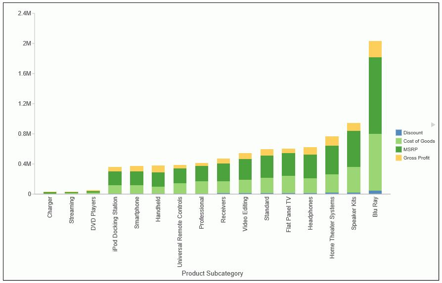

In Chart and Visualization mode, you can now sort your bar, line, and area charts by the total value. While this feature was implemented specifically for Stacked Bar charts, it also applies to other chart types. This feature enables you to view your data in numerical order, allowing you to identify trends and determine what data points are priorities. For example, the chart in the following image is set to Ascending, which sorts the chart from the lowest value to the highest value.
